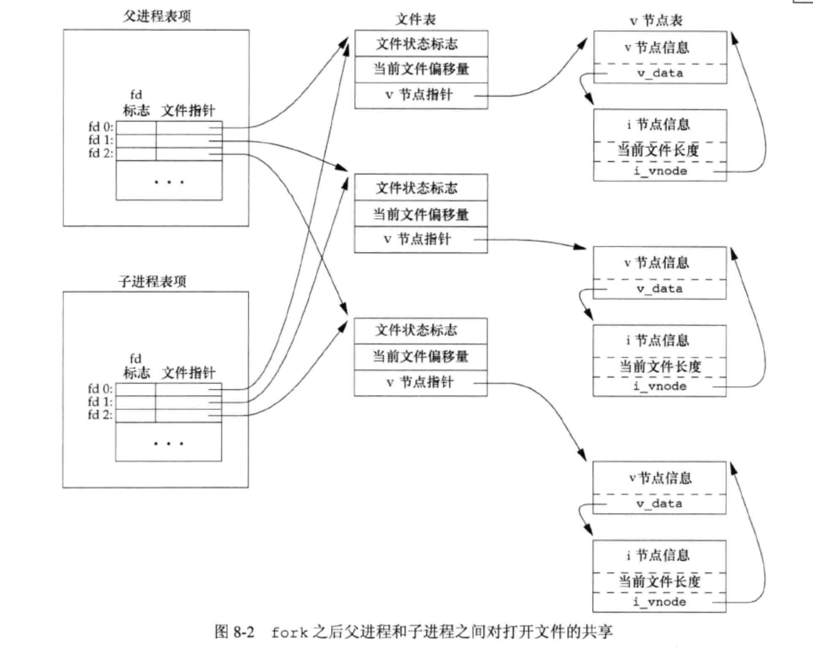
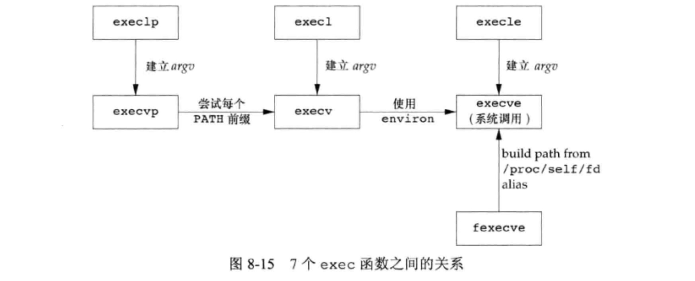

<!DOCTYPE html>
<html lang="en">

<head>
  <meta charset="utf-8" />
   
  <meta name="keywords" content="生活,旅行,思考,代码,博客" />
   
  <meta name="description" content="一座孤岛" />
  
  <meta name="viewport" content="width=device-width, initial-scale=1, maximum-scale=1" />
  <title>
    《UNIX环境高级编程》第八章——进程控制 |  akaQin&#39;s Blog
  </title>
  <meta name="generator" content="hexo-theme-yilia-plus">
  
  <link rel="shortcut icon" href="/favicon.ico" />
  
  
<link rel="stylesheet" href="/css/style.css">

  
<script src="/js/pace.min.js"></script>


  

  

<link rel="alternate" href="/atom.xml" title="akaQin's Blog" type="application/atom+xml">
</head>

</html>

<body>
  <div id="app">
    <main class="content">
      <section class="outer">
  <article id="post-《UNIX环境高级编程》第八章——进程控制" class="article article-type-post" itemscope
  itemprop="blogPost" data-scroll-reveal>

  <div class="article-inner">
    
    <header class="article-header">
       
<h1 class="article-title sea-center" style="border-left:0" itemprop="name">
  《UNIX环境高级编程》第八章——进程控制
</h1>
  

    </header>
    

    
    <div class="article-meta">
      <a href="/2020/03/02/%E3%80%8AUNIX%E7%8E%AF%E5%A2%83%E9%AB%98%E7%BA%A7%E7%BC%96%E7%A8%8B%E3%80%8B%E7%AC%AC%E5%85%AB%E7%AB%A0%E2%80%94%E2%80%94%E8%BF%9B%E7%A8%8B%E6%8E%A7%E5%88%B6/" class="article-date">
  <time datetime="2020-03-02T13:01:18.000Z" itemprop="datePublished">2020-03-02</time>
</a>
      
  <div class="article-category">
    <a class="article-category-link" href="/categories/%E3%80%8AAPUE%E3%80%8B%E7%AC%94%E8%AE%B0/">《APUE》笔记</a>
  </div>

      
      
<div class="word_count">
    <span class="post-time">
        <span class="post-meta-item-icon">
            <i class="ri-quill-pen-line"></i>
            <span class="post-meta-item-text"> 字数统计:</span>
            <span class="post-count">2.4k字</span>
        </span>
    </span>

    <span class="post-time">
        &nbsp; | &nbsp;
        <span class="post-meta-item-icon">
            <i class="ri-book-open-line"></i>
            <span class="post-meta-item-text"> 阅读时长≈</span>
            <span class="post-count">8分钟</span>
        </span>
    </span>
</div>

      
    </div>
    

    
    
    <div class="tocbot"></div>


    

    
    <div class="article-entry" itemprop="articleBody">
      


      

      
      <h3 id="进程标识"><a href="#进程标识" class="headerlink" title="进程标识"></a>进程标识</h3><ul>
<li>每个进程都有一个非负整型表示的唯一进程ID</li>
<li>ID为0的进程通常是调度进程，常常被称为交换进程（swapper）。该进程是内核的一部分，它并不执行任何磁盘上的程序，因此也被称为系统进程。</li>
<li>进程ID 1通常是init进程，在自举过程结束时由内核调用。该进程的程序文件是/etc/init或/sbin/init。此进程负责在自举内核后启动一个UNIX系统。</li>
<li>init读取与系统有关的初始化文件，并将系统引导到一个状态。</li>
<li>init进程不会终止，它是一个普通的用户进程，以超级用户特权运行；交换进程是内核中的系统进程。</li>
</ul>
<h3 id="fork函数"><a href="#fork函数" class="headerlink" title="fork函数"></a>fork函数</h3><figure class="highlight c"><table><tr><td class="gutter"><pre><span class="line">1</span><br><span class="line">2</span><br><span class="line">3</span><br></pre></td><td class="code"><pre><span class="line"><span class="meta">#<span class="meta-keyword">include</span> <span class="meta-string">&lt;unistd.h&gt;</span></span></span><br><span class="line"></span><br><span class="line"><span class="function"><span class="keyword">pid_t</span> <span class="title">fork</span><span class="params">(<span class="keyword">void</span>)</span></span>;</span><br></pre></td></tr></table></figure>
<h4 id="函数说明"><a href="#函数说明" class="headerlink" title="函数说明"></a>函数说明</h4><ul>
<li>调用一次，返回两次。子进程返回0，父进程返回子进程ID，出错返回-1</li>
<li>子进程和父进程继续执行fork之后的指令；子进程获得父进程数据空间、堆、栈的副本；子进程和父进程共享正文段</li>
<li>fork时用到<code>写时复制（Copy-On-Write）</code>技术，这些区域由父进程和子进程共享，内核将他们的访问权限改为只读，当任一进程尝试修改时，内核只为修改区域的那块内存制作一个副本，通常是虚拟内存中的一“页”</li>
<li>fork后先执行哪个进程是不确定的，取决于内核所使用的调度算法</li>
<li>文件共享。父进程的所有打开文件描述符都被复制到子进程中，父进程和子进程每个相同的打开描述符共享一个文件表项（包括文件偏移量）。<br></li>
</ul>
<a id="more"></a>

<h4 id="子进程从父进程继承"><a href="#子进程从父进程继承" class="headerlink" title="子进程从父进程继承"></a>子进程从父进程继承</h4><ul>
<li>实际用户ID、实际组ID、有效用户ID、有效组ID</li>
<li>附属组ID</li>
<li>进程组ID</li>
<li>会话ID</li>
<li>控制终端</li>
<li>设置用户ID标志和设置组ID标志</li>
<li>当前工作目录</li>
<li>根目录</li>
<li>文件模式创建屏蔽字</li>
<li>信号屏蔽和安排</li>
<li>对任一打开间描述符的执行时关闭（close-on-exec）标志</li>
<li>环境</li>
<li>连接的共享存储段</li>
<li>存储映像</li>
<li>资源限制</li>
</ul>
<h4 id="父进程与子进程的区别"><a href="#父进程与子进程的区别" class="headerlink" title="父进程与子进程的区别"></a>父进程与子进程的区别</h4><ul>
<li>fork的返回值不同</li>
<li>进程ID不同</li>
<li>这两个进程的父进程ID不同</li>
<li>子进程的tms_utime、tms_stime、tms_cutime和tms_ustime的值设置为0</li>
<li>子进程不继承父进程设置的文件锁</li>
<li>子进程的未处理闹钟被清除</li>
<li>子进程的未处理信号集设置为空集<ul>
<li>fork失败的两个主要原因：</li>
</ul>
</li>
<li>系统中已经有了太多的进程</li>
<li>该用户ID的进程总数超过了系统的限制</li>
</ul>
<h3 id="vfork函数"><a href="#vfork函数" class="headerlink" title="vfork函数"></a>vfork函数</h3><ul>
<li>vfork函数用于创建一个新进程，而该新进程的目的是exec一个新程序。</li>
<li>vfork和fork一样都创建一个子进程，但是它并不将父进程的地址空间完全复制到子进程中，因为子进程会立即调用exec或exit，于是也就不会引用该地址空间。不过在子进程调用exec或exit之前，它在父进程的空间中运行。</li>
<li>vfork保证子进程先运行，在它调用exec或exit之后父进程才可能被调度运行，当子进程调用这两个函数中任意一个时，父进程会恢复运行。</li>
</ul>
<h3 id="exit函数"><a href="#exit函数" class="headerlink" title="exit函数"></a>exit函数</h3><ul>
<li>进程的5种正常终止方式：<ul>
<li>在main函数内执行return语句。等效于调用exit</li>
<li>调用exit函数。由ISO C定义，其操作包括调用各终止处理程序，关闭所有标准I/O流等</li>
<li>调用_exit或_Exit函数。ISO C定义_Exit，目的是提供一种无需运行终止处理程序和信号处理程序的方法。对标准I/O流是否进行冲洗，这取决于实现。</li>
<li>进程的最后一个线程在启动例程中执行return语句。</li>
<li>进程的最后一个线程调用pthread_exit函数。</li>
</ul>
</li>
<li>进程的3种异常终止方式：<ul>
<li>调用abort，它产生SIGABRT信号</li>
<li>当进程接收到某种信号时</li>
<li>最后一个线程对“取消”请求做出响应。</li>
</ul>
</li>
<li>不管进程如何终止，最后内核都会为相应进程关闭所有打开描述符，释放它所使用的存储器等。所以大多数exit的现代实现不再关闭流</li>
</ul>
<h4 id="终止进程如何通知父进程它是如何终止的？"><a href="#终止进程如何通知父进程它是如何终止的？" class="headerlink" title="终止进程如何通知父进程它是如何终止的？"></a>终止进程如何通知父进程它是如何终止的？</h4><p>对于三个终止函数（exit、_exit和_Exit），将其<code>退出状态</code>作为参数传递给函数。对于异常终止情况，内核（不是进程本身）产生一个指示其终止原因的<code>终止状态</code>。在任意一种情况下，该终止进程的父进程都能用wait和waitpid函数取得其终止状态。</p>
<h4 id="父进程在子进程之前终止会怎样？"><a href="#父进程在子进程之前终止会怎样？" class="headerlink" title="父进程在子进程之前终止会怎样？"></a>父进程在子进程之前终止会怎样？</h4><p>对于父进程已经终止的所有进程，它们的父进程都改变为init进程（称为由init进程收养）。操作过程大致是：在一个进程终止时，内核逐个检查所有活动进程，如果是正要终止进程的子进程，则将该进程的父进程ID改为1。</p>
<h4 id="如果子进程在父进程之前终止，父进程如何获得子进程的终止状态？"><a href="#如果子进程在父进程之前终止，父进程如何获得子进程的终止状态？" class="headerlink" title="如果子进程在父进程之前终止，父进程如何获得子进程的终止状态？"></a>如果子进程在父进程之前终止，父进程如何获得子进程的终止状态？</h4><p>如果子进程完全消失了，父进程在最终准备好检查子进程是否终止时是无法获取它的终止状态的。内核为每个终止子进程保存了一定量的信息，所以当终止进程的父进程调用wait或waitpid时，可以得到这些信息。包括进程ID、终止状态和CPU时间总量。</p>
<h4 id="什么是僵尸进程？"><a href="#什么是僵尸进程？" class="headerlink" title="什么是僵尸进程？"></a>什么是僵尸进程？</h4><p>内核可以释放终止进程所使用的所有存储区，关闭其所有打开文件。一个已经终止、但是其父进程尚未对其进行善后处理（获取终止子进程的有关信息、释放它仍占用的资源）的进程被称为僵尸进程。如果编写一个长期运行的程序，它fork了很多子进程，那么除非父进程等待取得子进程的终止状态，不然这些子进程终止后就会变成僵尸进程。</p>
<h4 id="一个由init进程收养的进程终止后会不会变成僵尸进程？"><a href="#一个由init进程收养的进程终止后会不会变成僵尸进程？" class="headerlink" title="一个由init进程收养的进程终止后会不会变成僵尸进程？"></a>一个由init进程收养的进程终止后会不会变成僵尸进程？</h4><p>不会的。因为init被编写成无论何时只要有一个子进程终止，init就会调用一个wait函数取得其终止状态。</p>
<h3 id="wait和waitpid函数"><a href="#wait和waitpid函数" class="headerlink" title="wait和waitpid函数"></a>wait和waitpid函数</h3><figure class="highlight c"><table><tr><td class="gutter"><pre><span class="line">1</span><br><span class="line">2</span><br><span class="line">3</span><br><span class="line">4</span><br><span class="line">5</span><br></pre></td><td class="code"><pre><span class="line"><span class="meta">#<span class="meta-keyword">include</span> <span class="meta-string">&lt;sys/wait.h&gt;</span></span></span><br><span class="line"></span><br><span class="line"><span class="function"><span class="keyword">pid_t</span> <span class="title">wait</span><span class="params">(<span class="keyword">int</span> *statloc)</span></span>;</span><br><span class="line"></span><br><span class="line"><span class="function"><span class="keyword">pid_t</span> <span class="title">waitpid</span><span class="params">(<span class="keyword">pid_t</span> pid, <span class="keyword">int</span> *statloc, <span class="keyword">int</span> options)</span></span>;</span><br></pre></td></tr></table></figure>
<h4 id="函数说明-1"><a href="#函数说明-1" class="headerlink" title="函数说明"></a>函数说明</h4><ul>
<li>成功返回进程id，出错返回0或-1</li>
<li>statloc是一个整型指针，保存终止进程的终止状态，当它是一个空指针时，则不保存</li>
</ul>
<h4 id="调用wait或waitpid会发生什么？"><a href="#调用wait或waitpid会发生什么？" class="headerlink" title="调用wait或waitpid会发生什么？"></a>调用wait或waitpid会发生什么？</h4><ul>
<li>如果所有子进程都还在运行，则阻塞</li>
<li>如果一个子进程已经终止，正等待父进程获取其终止状态，则取得该子进程的终止状态立即返回</li>
<li>如果它没有任何子进程，则立即出错返回</li>
</ul>
<h4 id="两个函数的区别"><a href="#两个函数的区别" class="headerlink" title="两个函数的区别"></a>两个函数的区别</h4><ul>
<li>在一个子进程终止前，wait使其调用者阻塞，而waitpid有一选项，可使调用者不阻塞</li>
<li>waitpid并不等待其调用之后的第一个子进程终止，它有若干选项，可以控制它所等待的进程</li>
</ul>
<h4 id="其他相关函数"><a href="#其他相关函数" class="headerlink" title="其他相关函数"></a>其他相关函数</h4><figure class="highlight c"><table><tr><td class="gutter"><pre><span class="line">1</span><br><span class="line">2</span><br></pre></td><td class="code"><pre><span class="line"><span class="meta">#<span class="meta-keyword">include</span> <span class="meta-string">&lt;sys/wait.h&gt;</span></span></span><br><span class="line"><span class="function"><span class="keyword">int</span> <span class="title">waitid</span><span class="params">(<span class="keyword">idtype_t</span> idtype, <span class="keyword">id_t</span> id, <span class="keyword">siginfo_t</span> *infop, <span class="keyword">int</span> options)</span></span>;</span><br></pre></td></tr></table></figure>
<ul>
<li>与waitpid相似，waitid允许一个进程指定要等待的子进程。但它使用两个单独的参数表示要等待的子进程所属的类型，而不是将此与进程ID或进程组ID组合成一个参数。<figure class="highlight c"><table><tr><td class="gutter"><pre><span class="line">1</span><br><span class="line">2</span><br><span class="line">3</span><br><span class="line">4</span><br></pre></td><td class="code"><pre><span class="line"></span><br><span class="line"><span class="function"><span class="keyword">pid_t</span> <span class="title">wait3</span><span class="params">(<span class="keyword">int</span> *statloc, <span class="keyword">int</span> options, struct rusage *resage)</span></span>;</span><br><span class="line"></span><br><span class="line"><span class="function"><span class="keyword">pid_t</span> <span class="title">wait4</span><span class="params">(<span class="keyword">pid_t</span> pid, <span class="keyword">int</span> *statloc, <span class="keyword">int</span> options, struct rusage *rusage)</span></span>;</span><br></pre></td></tr></table></figure></li>
<li>这两个函数提供的功能比wait、waitpid和waitid要多一个，与附加参数有关。该参数允许内核返回由终止进程及其所有子进程所使用的资源概况。</li>
</ul>
<h3 id="竞争条件"><a href="#竞争条件" class="headerlink" title="竞争条件"></a>竞争条件</h3><ul>
<li>当多个进程都企图对共享数据进行某种处理，而最后的结果又取决于进程运行的顺序时，我们认为发生了竞争条件。</li>
<li>如果一个进程希望等待一个子进程终止，则它必须调用wait函数中的一个。</li>
<li>如果一个进程要等待其父进程终止，则可使用下列形式的循环：<figure class="highlight c"><table><tr><td class="gutter"><pre><span class="line">1</span><br><span class="line">2</span><br><span class="line">3</span><br></pre></td><td class="code"><pre><span class="line"><span class="keyword">while</span>(getppid() != <span class="number">1</span>) &#123;</span><br><span class="line">  sleep(<span class="number">1</span>);</span><br><span class="line">&#125;</span><br></pre></td></tr></table></figure>
这种形式的循环称为<code>轮询（polling）</code>，它的问题是浪费了CPU时间，因为调用者每隔1s都被唤醒，然后进行条件测试</li>
<li>为了避免竞争条件和轮询，在多个进程之间需要某种形式的信号发送和接收的方法。包括信号机制和进程间通信（IPC）</li>
</ul>
<h3 id="exec函数"><a href="#exec函数" class="headerlink" title="exec函数"></a>exec函数</h3><h4 id="函数说明-2"><a href="#函数说明-2" class="headerlink" title="函数说明"></a>函数说明</h4><figure class="highlight c"><table><tr><td class="gutter"><pre><span class="line">1</span><br><span class="line">2</span><br><span class="line">3</span><br><span class="line">4</span><br><span class="line">5</span><br><span class="line">6</span><br><span class="line">7</span><br><span class="line">8</span><br><span class="line">9</span><br></pre></td><td class="code"><pre><span class="line"><span class="meta">#<span class="meta-keyword">include</span> <span class="meta-string">&lt;unistd.h&gt;</span></span></span><br><span class="line"><span class="comment">//此处省略参数声明</span></span><br><span class="line"><span class="function"><span class="keyword">int</span> <span class="title">execl</span><span class="params">()</span></span>;</span><br><span class="line"><span class="function"><span class="keyword">int</span> <span class="title">execv</span><span class="params">()</span></span>;</span><br><span class="line"><span class="function"><span class="keyword">int</span> <span class="title">execle</span><span class="params">()</span></span>;</span><br><span class="line"><span class="function"><span class="keyword">int</span> <span class="title">execve</span><span class="params">()</span></span>;</span><br><span class="line"><span class="function"><span class="keyword">int</span> <span class="title">execlp</span><span class="params">()</span></span>;</span><br><span class="line"><span class="function"><span class="keyword">int</span> <span class="title">execvp</span><span class="params">()</span></span>;</span><br><span class="line"><span class="function"><span class="keyword">int</span> <span class="title">fexecve</span><span class="params">()</span></span>;</span><br></pre></td></tr></table></figure>
<ul>
<li>当进程调用一种exec函数时，该进程执行的程序完全替换为新程序，从main函数开始执行。</li>
<li>exec不创建新进程，进程ID不变。</li>
<li>exec只是用磁盘上的一个新程序替换了当前进程的正文段、数据段、堆段和栈段</li>
<li>7个函数的关系：<br></li>
</ul>
<h3 id="更改用户ID、组ID"><a href="#更改用户ID、组ID" class="headerlink" title="更改用户ID、组ID"></a>更改用户ID、组ID</h3><figure class="highlight c"><table><tr><td class="gutter"><pre><span class="line">1</span><br><span class="line">2</span><br><span class="line">3</span><br><span class="line">4</span><br></pre></td><td class="code"><pre><span class="line"><span class="meta">#<span class="meta-keyword">include</span> <span class="meta-string">&lt;unistd.h&gt;</span></span></span><br><span class="line"></span><br><span class="line"><span class="function"><span class="keyword">int</span> <span class="title">setuid</span><span class="params">(<span class="keyword">uid_t</span> uid)</span></span>;</span><br><span class="line"><span class="function"><span class="keyword">int</span> <span class="title">setgid</span><span class="params">(<span class="keyword">gid_t</span> gid)</span></span>;</span><br></pre></td></tr></table></figure>
<p></p>

      
      <!-- reward -->
      
      <div id="reward-btn">
        打赏
      </div>
      
    </div>
    

      <!-- copyright -->
      
        <div class="declare">
          <ul class="post-copyright">
            <li>
              <i class="ri-copyright-line"></i>
              <strong>版权声明： </strong s>
              本博客所有文章除特别声明外，均采用 <a href="https://www.apache.org/licenses/LICENSE-2.0.html" rel="external nofollow"
                target="_blank">Apache License 2.0</a> 许可协议。转载请注明出处！
            </li>
          </ul>
        </div>
        
    <footer class="article-footer">
      
          
<div class="share-btn">
      <span class="share-sns share-outer">
        <i class="ri-share-forward-line"></i>
        分享
      </span>
      <div class="share-wrap">
        <i class="arrow"></i>
        <div class="share-icons">
          
          <a class="weibo share-sns" href="javascript:;" data-type="weibo">
            <i class="ri-weibo-fill"></i>
          </a>
          <a class="weixin share-sns wxFab" href="javascript:;" data-type="weixin">
            <i class="ri-wechat-fill"></i>
          </a>
          <a class="qq share-sns" href="javascript:;" data-type="qq">
            <i class="ri-qq-fill"></i>
          </a>
          <a class="douban share-sns" href="javascript:;" data-type="douban">
            <i class="ri-douban-line"></i>
          </a>
          <!-- <a class="qzone share-sns" href="javascript:;" data-type="qzone">
            <i class="icon icon-qzone"></i>
          </a> -->
          
          <a class="facebook share-sns" href="javascript:;" data-type="facebook">
            <i class="ri-facebook-circle-fill"></i>
          </a>
          <a class="twitter share-sns" href="javascript:;" data-type="twitter">
            <i class="ri-twitter-fill"></i>
          </a>
          <a class="google share-sns" href="javascript:;" data-type="google">
            <i class="ri-google-fill"></i>
          </a>
        </div>
      </div>
</div>

<div class="wx-share-modal">
    <a class="modal-close" href="javascript:;"><i class="ri-close-circle-line"></i></a>
    <p>扫一扫，分享到微信</p>
    <div class="wx-qrcode">
      
    </div>
</div>

<div id="share-mask"></div>
      
      
  <ul class="article-tag-list" itemprop="keywords"><li class="article-tag-list-item"><a class="article-tag-list-link" href="/tags/process/" rel="tag">process</a></li></ul>


    </footer>

  </div>

  
  
  <nav class="article-nav">
    
      <a href="/2020/03/02/strlen%E4%B8%8Esizeof%E5%8C%BA%E5%88%AB/" class="article-nav-link">
        <strong class="article-nav-caption">上一篇</strong>
        <div class="article-nav-title">
          
            strlen与sizeof区别
          
        </div>
      </a>
    
    
      <a href="/2020/02/23/%E4%B8%BA%E4%BB%80%E4%B9%88calloc%E4%BC%9A%E6%AF%94malloc-memset%E5%BF%AB/" class="article-nav-link">
        <strong class="article-nav-caption">下一篇</strong>
        <div class="article-nav-title">为什么calloc会比malloc+memset快</div>
      </a>
    
  </nav>


  

  
  
<!-- valine评论 -->
<div id="vcomments-box">
    <div id="vcomments">
    </div>
</div>
<script src="//cdn1.lncld.net/static/js/3.0.4/av-min.js"></script>
<script src='https://cdn.jsdelivr.net/npm/valine@1.3.10/dist/Valine.min.js'></script>
<script>
    new Valine({
        el: '#vcomments',
        app_id: 'X2Yrs2HgM1dBr94LBlfP7Jsj-gzGzoHsz',
        app_key: 'x2WQjNYF5CQseEAN1iSqXOLQ',
        path: window.location.pathname,
        notify: 'true',
        verify: 'false',
        avatar: 'mp',
        placeholder: '给我的文章加点评论吧~',
        recordIP: true
    });
    const infoEle = document.querySelector('#vcomments .info');
    if (infoEle && infoEle.childNodes && infoEle.childNodes.length > 0) {
        infoEle.childNodes.forEach(function (item) {
            item.parentNode.removeChild(item);
        });
    }
</script>
<style>
    #vcomments-box {
        padding: 5px 30px;
    }

    @media screen and (max-width: 800px) {
        #vcomments-box {
            padding: 5px 0px;
        }
    }

    #vcomments-box #vcomments {
        background-color: #fff;
    }

    .v .vlist .vcard .vh {
        padding-right: 20px;
    }

    .v .vlist .vcard {
        padding-left: 10px;
    }
</style>

  

  
  
  

</article>

</section>
      <footer class="footer">
  <div class="outer">
    <ul class="list-inline">
      <li>
        &copy;
        2019-2020
        Arron Qin
      </li>
      <li>
        
      </li>
    </ul>
    <ul class="list-inline">
      <li>
        
        
        <span>
  <i>PV:<span id="busuanzi_value_page_pv"></span></i>
  <i>UV:<span id="busuanzi_value_site_uv"></span></i>
</span>
        
      </li>
      <li>
        <!-- cnzz统计 -->
        
      </li>
    </ul>
  </div>
</footer>
    <div class="to_top">
        <div class="totop" id="totop">
  <i class="ri-arrow-up-line"></i>
</div>
      </div>
    </main>
      <aside class="sidebar">
        <button class="navbar-toggle"></button>
<nav class="navbar">
  
  <div class="logo">
    <a href="/"></a>
  </div>
  
  <ul class="nav nav-main">
    
    <li class="nav-item">
      <a class="nav-item-link" href="/">主页</a>
    </li>
    
    <li class="nav-item">
      <a class="nav-item-link" href="/archives">归档</a>
    </li>
    
    <li class="nav-item">
      <a class="nav-item-link" href="/categories">分类</a>
    </li>
    
    <li class="nav-item">
      <a class="nav-item-link" href="/tags">标签</a>
    </li>
    
    <li class="nav-item">
      <a class="nav-item-link" href="/about/me">关于我</a>
    </li>
    
  </ul>
</nav>
<nav class="navbar navbar-bottom">
  <ul class="nav">
    <li class="nav-item">
      
      <a class="nav-item-link nav-item-search"  title="Search">
        <i class="ri-search-line"></i>
      </a>
      
      
      <a class="nav-item-link" target="_blank" href="/atom.xml" title="RSS Feed">
        <i class="ri-rss-line"></i>
      </a>
      
    </li>
  </ul>
</nav>
<div class="search-form-wrap">
  <div class="local-search local-search-plugin">
  <input type="search" id="local-search-input" class="local-search-input" placeholder="Search...">
  <div id="local-search-result" class="local-search-result"></div>
</div>
</div>
      </aside>
      <div id="mask"></div>

<!-- #reward -->
<div id="reward">
  <span class="close"><i class="ri-close-line"></i></span>
  <p class="reward-p"><i class="ri-cup-line"></i>请我喝杯咖啡吧~</p>
  <div class="reward-box">
    
    <div class="reward-item">
      
      <span class="reward-type">支付宝</span>
    </div>
    
    
    <div class="reward-item">
      
      <span class="reward-type">微信</span>
    </div>
    
  </div>
</div>
      
<script src="/js/jquery-2.0.3.min.js"></script>


<script src="/js/jquery.justifiedGallery.min.js"></script>


<script src="/js/lazyload.min.js"></script>


<script src="/js/busuanzi-2.3.pure.min.js"></script>


<script src="/js/share.js"></script>


<script src="/fancybox/jquery.fancybox.min.js"></script>


<script>
  try {
    var typed = new Typed("#subtitle", {
    strings: ['面朝大海，春暖花开','愿你一生努力，一生被爱','想要的都拥有，得不到的都释怀'],
    startDelay: 0,
    typeSpeed: 200,
    loop: true,
    backSpeed: 100,
    showCursor: true
    });
  } catch (err) {
  }
  
</script>


<script src="/js/tocbot.min.js"></script>

<script>
  // Tocbot_v4.7.0  http://tscanlin.github.io/tocbot/
  tocbot.init({
    tocSelector: '.tocbot',
    contentSelector: '.article-entry',
    headingSelector: 'h1, h2, h3, h4, h5, h6',
    hasInnerContainers: true,
    scrollSmooth: true,
    scrollContainer:'main',
    positionFixedSelector: '.tocbot',
    positionFixedClass: 'is-position-fixed',
    fixedSidebarOffset: 'auto',
    onClick: (e) => {
      $('.toc-link').removeClass('is-active-link');
      $(`a[href=${e.target.hash}]`).addClass('is-active-link');
      $(e.target.hash).scrollIntoView();
      return false;
    }
  });
</script>


<script>
  var ayerConfig = {
    mathjax: false
  }
</script>


<script src="/js/ayer.js"></script>


<script src="https://cdn.jsdelivr.net/npm/jquery-modal@0.9.2/jquery.modal.min.js"></script>
<link rel="stylesheet" href="https://cdn.jsdelivr.net/npm/jquery-modal@0.9.2/jquery.modal.min.css">


<!-- Root element of PhotoSwipe. Must have class pswp. -->
<div class="pswp" tabindex="-1" role="dialog" aria-hidden="true">

    <!-- Background of PhotoSwipe. 
         It's a separate element as animating opacity is faster than rgba(). -->
    <div class="pswp__bg"></div>

    <!-- Slides wrapper with overflow:hidden. -->
    <div class="pswp__scroll-wrap">

        <!-- Container that holds slides. 
            PhotoSwipe keeps only 3 of them in the DOM to save memory.
            Don't modify these 3 pswp__item elements, data is added later on. -->
        <div class="pswp__container">
            <div class="pswp__item"></div>
            <div class="pswp__item"></div>
            <div class="pswp__item"></div>
        </div>

        <!-- Default (PhotoSwipeUI_Default) interface on top of sliding area. Can be changed. -->
        <div class="pswp__ui pswp__ui--hidden">

            <div class="pswp__top-bar">

                <!--  Controls are self-explanatory. Order can be changed. -->

                <div class="pswp__counter"></div>

                <button class="pswp__button pswp__button--close" title="Close (Esc)"></button>

                <button class="pswp__button pswp__button--share" style="display:none" title="Share"></button>

                <button class="pswp__button pswp__button--fs" title="Toggle fullscreen"></button>

                <button class="pswp__button pswp__button--zoom" title="Zoom in/out"></button>

                <!-- Preloader demo http://codepen.io/dimsemenov/pen/yyBWoR -->
                <!-- element will get class pswp__preloader--active when preloader is running -->
                <div class="pswp__preloader">
                    <div class="pswp__preloader__icn">
                        <div class="pswp__preloader__cut">
                            <div class="pswp__preloader__donut"></div>
                        </div>
                    </div>
                </div>
            </div>

            <div class="pswp__share-modal pswp__share-modal--hidden pswp__single-tap">
                <div class="pswp__share-tooltip"></div>
            </div>

            <button class="pswp__button pswp__button--arrow--left" title="Previous (arrow left)">
            </button>

            <button class="pswp__button pswp__button--arrow--right" title="Next (arrow right)">
            </button>

            <div class="pswp__caption">
                <div class="pswp__caption__center"></div>
            </div>

        </div>

    </div>

</div>

<link rel="stylesheet" href="https://cdn.jsdelivr.net/npm/photoswipe@4.1.3/dist/photoswipe.min.css">
<link rel="stylesheet" href="https://cdn.jsdelivr.net/npm/photoswipe@4.1.3/dist/default-skin/default-skin.css">
<script src="https://cdn.jsdelivr.net/npm/photoswipe@4.1.3/dist/photoswipe.min.js"></script>
<script src="https://cdn.jsdelivr.net/npm/photoswipe@4.1.3/dist/photoswipe-ui-default.min.js"></script>

<script>
    function viewer_init() {
        let pswpElement = document.querySelectorAll('.pswp')[0];
        let $imgArr = document.querySelectorAll(('.article-entry img:not(.reward-img)'))

        $imgArr.forEach(($em, i) => {
            $em.onclick = () => {
                // slider展开状态
                // todo: 这样不好，后面改成状态
                if (document.querySelector('.left-col.show')) return
                let items = []
                $imgArr.forEach(($em2, i2) => {
                    let img = $em2.getAttribute('data-idx', i2)
                    let src = $em2.getAttribute('data-target') || $em2.getAttribute('src')
                    let title = $em2.getAttribute('alt')
                    // 获得原图尺寸
                    const image = new Image()
                    image.src = src
                    items.push({
                        src: src,
                        w: image.width || $em2.width,
                        h: image.height || $em2.height,
                        title: title
                    })
                })
                var gallery = new PhotoSwipe(pswpElement, PhotoSwipeUI_Default, items, {
                    index: parseInt(i)
                });
                gallery.init()
            }
        })
    }
    viewer_init()
</script>


<script type="text/javascript" src="https://js.users.51.la/20544303.js"></script>
  </div>
</body>

</html>